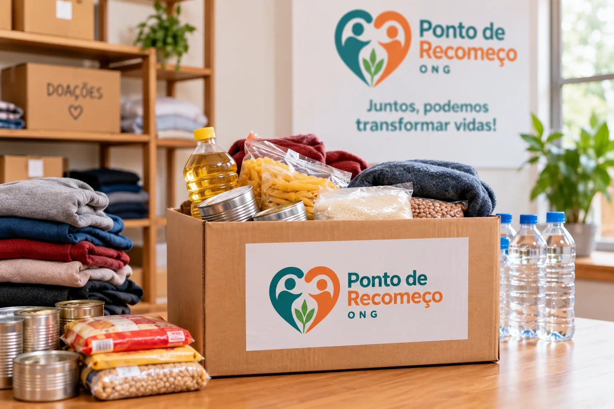
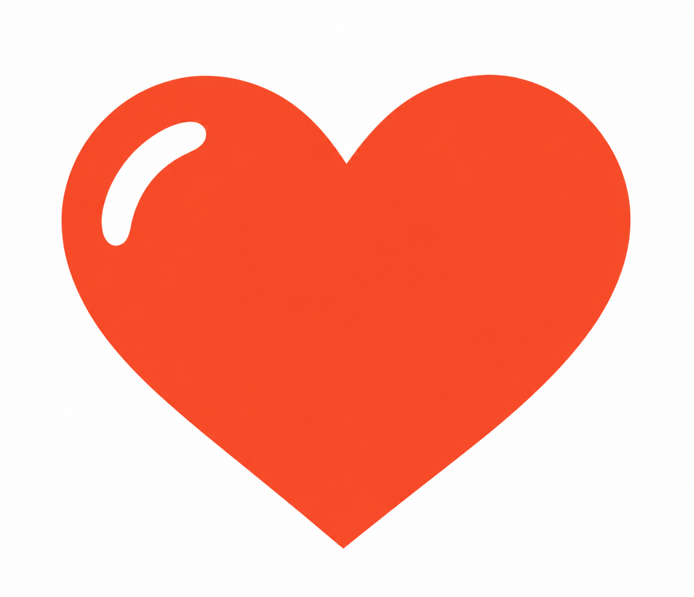
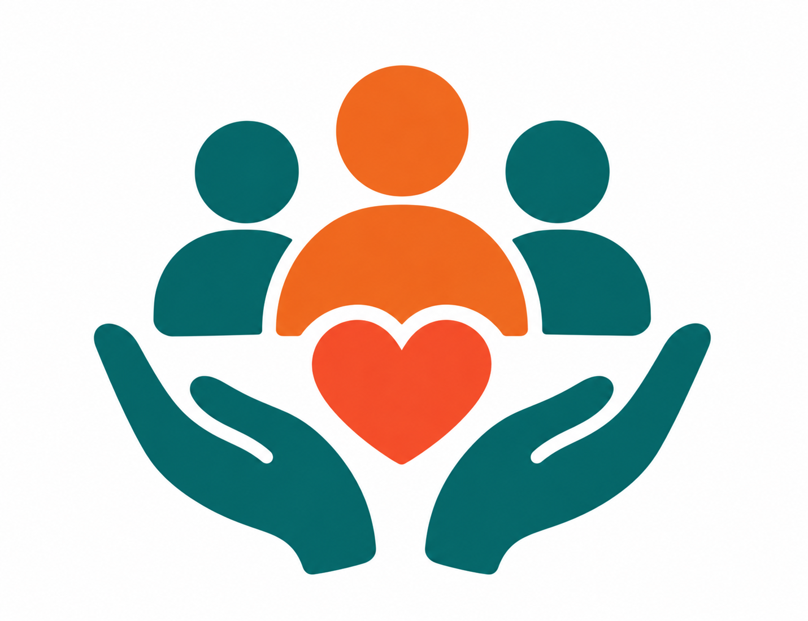

Como Fazer uma Doação


As doações ajudam a ONG Ponto de Recomeço a apoiar famílias em situação de vulnerabilidade. Podem ser doados alimentos, roupas e itens de higiene.


As doações ajudam a ONG Ponto de Recomeço a apoiar famílias em situação de vulnerabilidade. Podem ser doados alimentos, roupas e itens de higiene.

Os voluntários participam da organização das doações e ajudam nas ações realizadas pela ONG.
Sua participação ajuda a ONG Ponto de Recomeço a continuar suas ações.